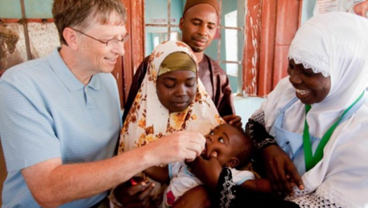
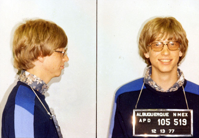
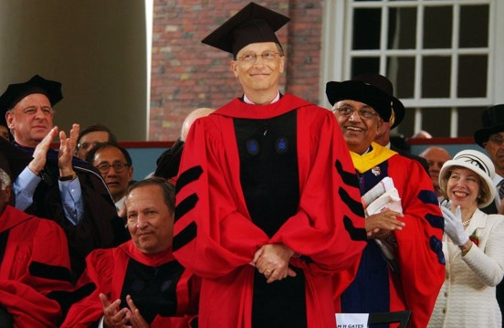
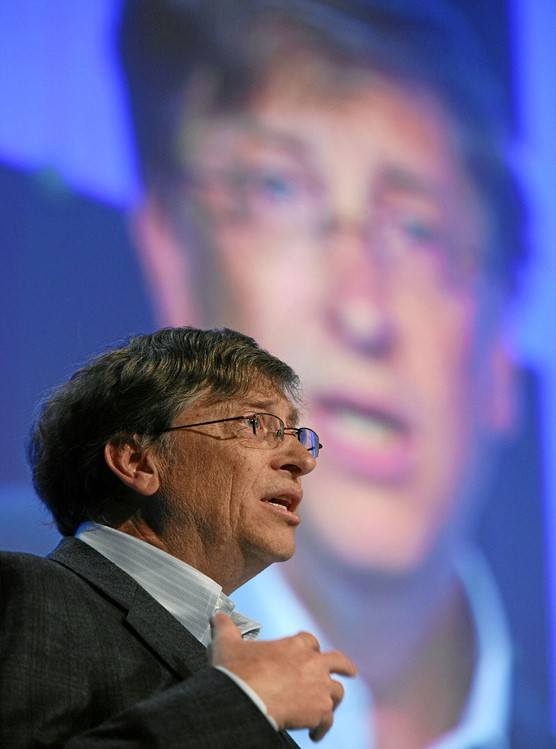

Gates cưới MelindaFrench ngày 1 tháng 1 năm 1994. Họ có ba con và sống trong khu biệt thự nhìn ra hồ Washington ở Medina, bang Washington. Theo thống kê công khai của quận King, cho đến 2006 giá trị của khu biệt thự vào khoảng 125 triệu $.
Bill Gates và gia đình
Năm 1987, Gates lần đầu tiên trở thành tỷ phú khi có tên trong danh sách Những người giàu nhất Forbes 400 xuất bản ở Hoa Kỳ, chỉ một ngày trước lần sinh nhật thứ 32 của ông. Là một tỷ phú tự thân lập nghiệp trẻ nhất thế giới với tài sản khi đó là 1,25 tỷ $.
Tạp chí Time nêu tên Gates là một trong những người ảnh hưởng nhất của thế kỷ 20, cũng như một trong 100 người ảnh hưởng nhất trong các năm 2004, 2005, và 2006. Gates cũng là Hiệp sĩ danh dự của Đế chế Anh (KBE) do Nữ hoàng Elizabeth II trao năm 2005, cùng với nhiều danh hiệu khác…
Ông luôn có mặt trong danh sách những người giàu nhất trên thế giới từ 1995 tới 2014. Tổng tài sản năm 2019 ước tính khoảng 105.3 tỷ $.
Năm 2000, Gates và vợ đã sáp nhập ba quỹ của gia đình thành một là Quỹ Bill & Melinda Gates, quỹ từ thiện hoạt động công khai lớn nhất thế giới hiện nay. Cách hoạt động của quỹ cho phép các nhà hảo tâm biết được thông tin số tiền họ quyên góp sẽ được sử dụng như thế nào.
Bill Gates làm công tác từ thiện chống bại liệt ở Nigeria
Quỹ đầu tư vào các công ty có mục đích làm giảm tỷ lệ đói nghèo ở các nước kém phát triển, vào các công ty sản xuất gây ô nhiễm nặng, công ty dược mà nhiều loại thuốc không được bán ở các nước đang phát triển. Mục tiêu của Quỹ là thúc đẩy những ý tưởng sáng tạo, phát triển các công nghệ năng lượng sạch, nâng cao khả năng chăm sóc sức khỏe của xã hội cũng như đầu tư vào giáo dục.
Cho đến 2007, Quỹ Bill & Melinda Gates là quỹ từ thiện lớn thứ hai ở Hoa Kỳ, với ngân sách tới 28 tỷ $. Họ có kế hoạch dành tới 95% tài sản cho từ thiện.
Năm 1977, Bill Gates đã bị bắt giữ ở New Mexico vì cố tình vượt đèn đỏ và không có bằng lái xe.
Bill Gates bị bắt giữ do vượt đèn đỏ và không có bằng lái
Vị tỉ phú tốt nghiệp đại học ở tuổi 53.
Bill Gates cuối cùng cũng đã có được tấm bằng đại học khi Havard trao cho ông bằng tiến sĩ danh dự.
Bill Gates tốt nghiệp đại học Havard ở tuổi 53
Là giám đốc điều hành, Gates thường xuyên gặp gỡ với các nhà quản lý cấp cao và quản lý chương trình phần mềm của Microsoft. Những người tham dự các cuộc họp này mô tả ông luôn sẵn sàng tranh luận trực tiếp, hoặc trách móc các thành viên quản lý để mọi người nhận thấy được các lỗ hổng trong chiến lược kinh doanh của họ hoặc những rủi ro trong đề xuất khi tính đến lợi ích lâu dài của công ty. Điều đó giúp ông và các cộng sự luôn làm việc một cách có hiệu quả, năng suất cao.
Bill Gates tại Diễn đàn kinh tế thế giới (tháng 1 năm 2018)
Ông vẫn thường tham gia các buổi diễn đàn kinh tế, huấn luyện doanh nghiệp. Ở đó ông không ngần ngại chia sẻ những bí quyết, những thử thách, khó khăn phải đối mặt của các doanh nghiệp. Song Bill Gates cũng nói ra những xu thế công nghệ nhân loại trong tương lai kèm theo những thử thách mà con người phải đối diện khi tiếp cận nó.
"Nếu bạn sinh ra trong nghèo khó, đó không phải là lỗi của bạn. Nhưng nếu bạn chết trong nghèo khó, thì đó là lỗi của bạn."-Bill Gates
Bằng niềm đam mê, sự nổ lực và chăm chỉ của bản thân, luôn luôn khao khát đạt được chiến thắng Bill Gates đã là nhân chứng sống cho thực tế rằng “Bạn chắc chắn chinh phục được ước mơ bằng tất cả đam mê và nổ lực”. Ông thực sự là người truyền cảm hứng mọi thời đại của thế giới.
"Đừng so sánh bản thân với người khác. Làm như vậy là bạn đang tự xúc phạm mình đấy!"-Bill Gates
Nguồn: Wikipedia